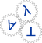

|  | GAPT: General Architecture for Proof Theory |
Gapt is a proof theory framework developed primarily at the Vienna University of Technology. Gapt contains data structures, algorithms, parsers and other components common in proof theory and automated deduction. In contrast to automated and interactive theorem provers whose focus is the construction of proofs, gapt concentrates on the transformation and further processing of proofs. In particular, it has the following features:
- Formulas and sequent calculus proofs for first-order logic, higher-order logic, and schematic formulas including equality reasoning and definitions
- Resolution refutations, expansion proofs
- Scriptable command-line interface
- Graphical user interface for viewing and transforming sequent calculus proofs, expansion proofs, etc.
- Basic proof transformations like regularization, Skolemization, interpolation, etc.
- Translations between the implemented proof calculi
- Gentzen-style cut-elimination
- Cut-Elimination by Resolution (ceres)
- Cut-Introduction
- Import from and export to:
Releases
The latest release is version 1.10, dated 2015-09-07: download
| Version | Date | Link |
|---|---|---|
| 1.7 | 2014-04-15 | gapt-1.7.zip |
| 1.8 | 2014-05-04 | gapt-1.8.zip |
| 1.9 | 2014-08-29 | gapt-1.9.zip |
| 1.10 | 2015-09-07 | gapt-1.10.tar.gz |
Development
Gapt is implemented in scala. Development of gapt is carried out on github, see our github repository. For more details, see also the developer wiki, the API documentation, or download the latest development build.
Publications
The following is a list of publications related to the system. Some of them describe proof-theoretic algorithms which are implemented in gapt, others describe a feature of the system or report on experiments carried out using gapt.
- G. Reis: Importing SMT and Connection proofs as expansion trees, PxTP 2015, 3-10.
- S. Hetzl, A. Leitsch, G. Reis and D. Weller: Algorithmic introduction of quantified cuts, Theoretical Computer Science, 549, 1-16, 2014.
- T. Libal, M. Riener, M. Rukhaia: Advanced Proof Viewing in ProofTool, UITP 2014, 35-47.
- S. Hetzl, A. Leitsch, G. Reis, J. Tapolczai and D. Weller: Introducing Quantified Cuts in Logic with Equality International Joint Conference in Automated Reasoning (IJCAR) 2014, S. Demri, D. Kapur and C. Weidenbach (eds.), Springer LNCS 8562.
- C. Dunchev, A. Leitsch, T. Libal, M. Riener, M. Rukhaia, D. Weller, B. Woltzenlogel Paleo: PROOFTOOL: a GUI for the GAPT Framework. UITP 2013, 1-14.
- S. Hetzl, T. Libal, M. Riener, and M. Rukhaia: Understanding Resolution Proofs through Herbrand's Theorem, Automated Reasoning with Analytic Tableaux and Related Methods (Tableaux 2013), D. Galmiche and D. Larchey-Wendling (eds.), Springer LNCS 8123.
- S. Hetzl: Project Presentation: Algorithmic Structuring and Compression of Proofs (ASCOP), Conferences on Intelligent Computer Mathematics (CICM) 2012, J. Jeuring et al. (eds.), Springer LNAI 7362.
- S. Hetzl, A. Leitsch and D. Weller: Towards Algorithmic Cut-Introduction, Logic for Programming, Artificial Intelligence and Reasoning (LPAR-18), N. Bjørner, A. Voronkov (eds.), Springer LNCS 7180.
- S. Hetzl, A. Leitsch, D. Weller: CERES in Higher-Order Logic, Annals of Pure and Applied Logic 162(12), 1001-1034, 2011
- M. Baaz, A. Leitsch: Cut-elimination and Redundancy-elimination by Resolution, Journal of Symbolic Computation 29(2), 149-177, 2000.
Support
- Vienna Science and Technology Fund (WWTF) via the Vienna Research Group VRG12-04: Structure and Expressivity
- Austrian Science Fund (FWF) project no. P25160: Algorithmic Structuring and Compression of Proofs
- Austrian Science Fund (FWF) project no. P24300: Proof Transformations via Cut-Elimination in Intuitionistic Logic
- joint French-Austrian ANR/FWF project no. I 383: About Schemata and Proofs
- Austrian Science Fund (FWF) project no. P22028: Proof-theoretic applications of CERES
- Georgian Shota Rustaveli National Science Foundation (SRNSF) project no. PG/6/4-102/13: Theorem Proving in Formula Schemata
- Georgian Shota Rustaveli National Science Foundation (SRNSF) project no. FR/51/4-102/13: Automated and Interactive Theorem Proving in Schemata and Unranked Logics.
| Last Change: 2015-09-29 |
|